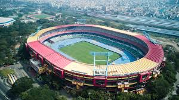

|
 |
|
| | | | | | | | | | | | | | | | | | | | | | | | | | | | | |
Jawaharlal Nehru Stadium is a famous multi-purpose sports stadium in Chennai, known for hosting football matches, athletic events, cultural programs, and public gatherings. Built with modern facilities and a large seating capacity, the stadium attracts sports lovers from across Tamil Nadu. It serves as an important center for national and state-level competitions. The surrounding area is busy and well connected by transport facilities. The stadium encourages young athletes to participate in sports and promotes physical fitness, teamwork, and discipline. Jawaharlal Nehru Stadium represents Chennai’s strong passion for sports, entertainment, and community events. |